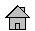
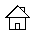
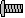
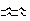

OUM |
Technique Overview |
||
Method Navigation |
Current Page Navigation |
||
|
|
||||||||
The purpose of this technique is to assist in utilizing Cockburn's technique for describing the different levels of use case models. Currently OUM prescribes business use cases and system use cases. More advanced use case techniques can be employed, specifically on projects that involve sophisticated custom development efforts.
In OUM, use case models are represented using two levels BUSINESS; high-level use cases (BA.060 in Envision), business use cases (RA.015) and SYSTEM use cases (RA.023). System use cases are SEA level or actor-goal use cases. For most purposes, this level is adequate for an OUM engagement.
Cockburn Approach to Use Case Models - This technique describes the different levels of use case models that Cockburn prescribes. The purpose of this Use Case Levels technique is to further understand the levels of use cases in progressive levels of detail, as prescribed in Cockburn's book, Writing Effective Use Cases.
In an OUM engagement, some organizations may be using the Cockburn approach. You should adhere to the use case modeling standards approved by the orgnaization with which you are working.
No. |
Step | Component | Component Description |
|---|---|---|---|
1 |
Add the symbol for the use case design scope in front of the use case name. | Design Scope Symbol | Insert the black house, white house, black box, white house or screw symbol in front of the use case title. |
2 |
Add the symbol for the use case goal level after the use case name. | Goal Level Symbol | Insert the waves, cloud, kite, fish or clam level symbol after the name of the use case name. |
This technique is used to describe use case details in terms of scope and goal levels.
The Use Case Model describes what the system will do from the actor's point of view in an ordered sequence of steps in which work is carried out by both the actor and the system.
There are various techniques for modeling use cases. In this technique, the Design Scope symbols are used directly in the Use Case Specification (RA.024). The symbol used indicates to what level of detail the use case is documented.
| Scope Symbol | Description |
|---|---|
 |
Organization Black Box Consider the organization where the system is inserted, without revealing its internal structure. |
 |
Organization White Box Consider the organization where the system is inserted, revealing its internal structure. |
| System Black Box Consider the system, without revealing its internal actions. |
|
| System White Box Consider the system, revealing its internal actions. |
|
 |
Component Describes the functioning of a system component. |
Cockburn also uses symbols to describe the level in which the user requirements are met:
| Goal Symbol | Description |
|---|---|
 |
User-Goal (waves) Corresponds to a user interaction with the system in which one of his goals is met. |
| Summary (kite) and Very high summary (cloud) More abstract level than user-goal, commonly used to provide the context in which the use cases are inserted. |
|
| Subfunction (fish)and Too Low (clam) Detailed user-goal, used when some operational detail is necessary. Some Sub-functions should never be written, use the clam symbol to indicate that the use case should be merged with it's calling Use Case. |
There are no templates available to assist with this technique.
This technique is recommended for use in the following OUM tasks when executing projects that include custom developed systems:
| Task | Usage |
|---|---|
| Use this technique to mark use cases with the appropriate symbols to adhere to the Cockburn levels. | |
| Use this technique to mark each Use Case Specification with the appropriate symbol to adhere to the Cockburn levels. |
Use the following criteria to check the quality of this technique:

Copyright © 2006, 2016, Oracle and/or its affiliates. All rights reserved.